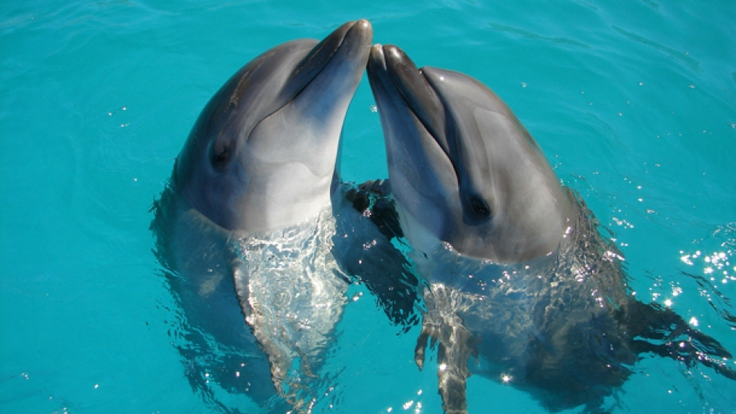

A dolphin is an aquatic mammal within the infraorder Cetacea that can be found all over the world. Cetacea is an infraorder of aquatic mammals that includes whales, dolphins, and porpoises. Dolphins are known to be fast swimmers and are the second most intelligent animal on the earth. Some dolphins can briefly travel at speeds of 29 kilometres (18 mi) per hour or leap about 30 feet (9.1 m). The word "dolphin" is originally greek. It comes from the ancient Greek delphis, related to the Greek delphus, or womb. The animal's name more or less means "a fish with a womb". A group of dolphins is called a "school" or a "pod". Male dolphins are called "bulls", females called "cows" and young dolphins are called "calves". The life-expectancy of a dolphin is 25-29 years.

There are between 42-50 different species of dolphins. The most commonly known dolphin is the Bottlenose dolphin.
Dolphins can live in either fresh or salt water. This includes open oceans, coastal waters that include bays and inlets, river basins, certain inland seas, gulfs, and in channels. Dolphins are widespread. Most species prefer the warm waters of the tropic zones, but some, such as the right whale dolphin, prefer colder climates.
Dolphins are carnivores and natural predators. The foods available to a dolphin vary with its geographic location. Dolphins eat a wide variety of sea creatures, including fish, crustaceans and squid, depending on what is available to them in their environment. Open water dolphins eat mostly squid and fish, while dolphins living along the coast eat bottom-dwelling creatures and fish. Though they have teeth, dolphins swallow their prey without chewing. Smaller fish are swallowed whole, while larger fish are either shaken to bits or rubbed against something to break them apart.
Dolphins have torpedo-shaped bodies with generally non-flexible necks, limbs modified into flippers, a tail fin, and bulbous heads. Dolphin skulls have small eye orbits, long snouts, and eyes placed on the sides of its head; they lack external ear flaps. Most dolphins are small, measuring less than 3 metres (10 feet) in length. Dolphins are easily recognizable because of their curved mouths. They have streamlined bodies and two limbs that are modified into flippers.
Most dolphins are active during the 24 hours, especially during the day and afternoon. What they do during the day depends on various factors such as the habitat and the season. To sleep. dolphins have to maintain a certain degree of consciousness to breathe. To do this, they keep one cerebral hemisphere active while the other rests. When moving from one place to another, dolphins move in one straight line swimming on the surface, individually or accompanied. Dolphins are very curious animals and love playing with objects and each other.
Return to the top of the page.